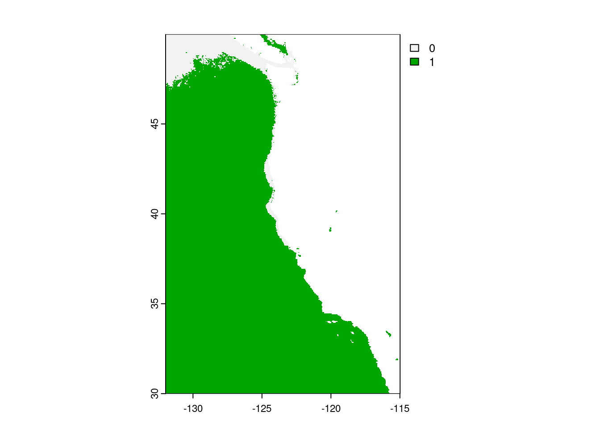
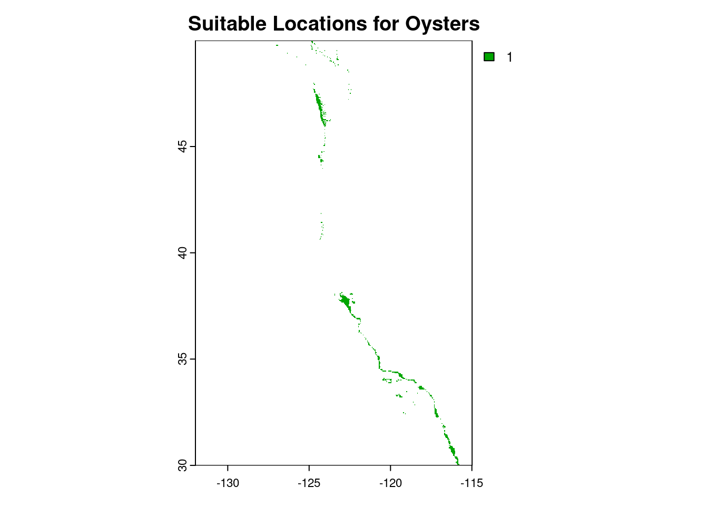
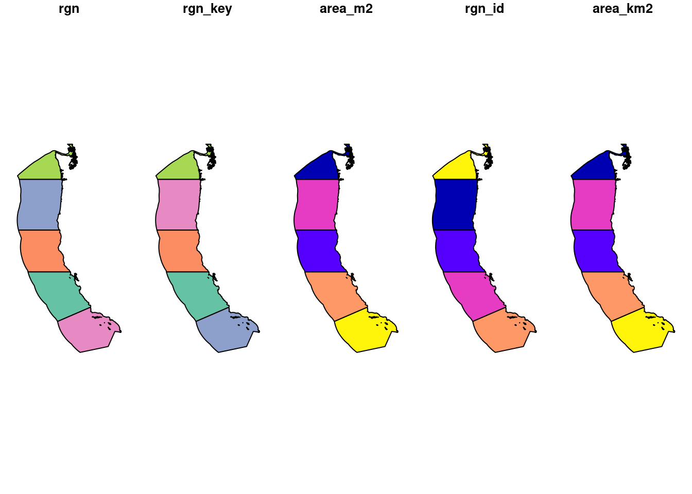

Code
library(tidyverse)
library(stars)
library(tmap)
library(sf)
library(RColorBrewer)
library(units)
library(terra)
library(testthat)
library(kableExtra)Exploring Viable Aquaculture on California Coast
library(tidyverse)
library(stars)
library(tmap)
library(sf)
library(RColorBrewer)
library(units)
library(terra)
library(testthat)
library(kableExtra)Before we can stack any data together, it is important to make sure they all have matching data formats. This means they are all rasters, have the same extent, resolution and crs! Since SST is in a list form, lets make it into a raster.
# Convert SST and wc_regions_clean to class rast
sst_stack <- rast(sst_ls)Then reproject bathymetryto match sst and the same for EEZ_zones. If you want to make sure, we can use testthat to check.
# Transform the CRS of the files to match
bathymetry <- terra::project(bathymetry, crs(sst_stack))
EEZ_zone <- EEZ_zone %>%
st_transform(crs = st_crs(bathymetry))
# Confirm that the CRS transformed as expected
test_that("The CRS of all data sets match", {
expect_true(crs(sst_stack) == crs(bathymetry) && crs(bathymetry) == crs(EEZ_zone))
})Test passed 🎉# Find the mean of SST
mean_sst <- mean(sst_stack)# Convert mean SST to Celsius
mean_sst_c <- mean_sst - 273.15
# Resample depth to match sst raster
bathymetry_resampled <- resample(bathymetry, mean_sst_c, method = "near")
# Crop
bathymetry_crop <- crop(bathymetry_resampled, mean_sst_c)
#water_temp_c <- tm_shape(mean_sst_c) +
#tm_raster(title = "Mean Water Temp", palette = c("skyblue", "midnightblue"),
#breaks = sst_temp_breaks) +
#tm_title("Mean Sea Surface Temperature (2008-2012) (°C)")
#water_temp_cNow, check to see if extent, resolution and CRS’s match
# Print and check the resolution of both rasters
if (all(res(bathymetry_resampled) == res(mean_sst_c))) {
print("Resolutions match.")
} else {
print("Resolutions do not match.")
}[1] "Resolutions match."# Print and check the extents of both rasters
if (ext(bathymetry_resampled) == ext(mean_sst_c)) {
print("Extents match.")
} else {
print("Extents do not match.")
}[1] "Extents match."# Print and check the CRS of both rasters
if (crs(bathymetry_resampled) == crs(mean_sst_c)) {
print("CRS match.")
} else {
print("CRS do not match.")
}[1] "CRS match."Awesome!
This map will be the basemap for our EEZ_zones. I want some custom breaks to highlight elevation and depth.
#bathymetry <- st_crop(bathymetry, st_bbox(mean_sst_c))
# Define breaks for land and sea
land_breaks <- seq(0, max(values(bathymetry)), by = 100)
sea_breaks <- seq(min(values(bathymetry)), 0, by = 100)
# Create color palettes for land and sea
land_palette <- colorRampPalette(c("#289e46", "#02843c", "#cfbb88" , "#6c4f01", "snow", bias = 10))(length(land_breaks) - 1)
sea_palette <- colorRampPalette(c("midnightblue", "lightblue"))(length(sea_breaks) - 1)
# Combine the palettes and breaks
all_breaks <- c(sea_breaks, land_breaks[-1]) # Combine breaks (remove 0 duplicate)
all_palette <- c(sea_palette, land_palette) # Combine palettes
# Create the map with custom breaks and palettes
land_sea <- tm_shape(bathymetry) +
tm_raster(title = "Elevation (ft)",
breaks = all_breaks,
palette = all_palette) +
tm_layout(legend.outside = TRUE,
frame = TRUE,
main.title = "West Coast Elevation and Bathymetry",
main.title.position = c(0.14, 1),
main.title.size = 1.2) +
tm_scale_bar(text.color = "#F6EAC7",
color.dark = "#665A47",
color.light = "#F6EAC7",
position = c(0.07, 0.02),
width = 0.3) +
tm_compass(type = "arrow",
size = 1.5,
position = c(0.06, 0.06),
text.color = "#F6EAC7",
color.dark = "#665A47",
color.light = "#F6EAC7")
land_sea
Pretty cool!
Because we are only interested in the areas where oysters live, we need to reclassify the SST for their known range as well as depth.
# Make copies before reclassifying oysters. I will need the original data for my next species
sst_oyster_c <- mean_sst_c
oyster_depth <- bathymetry_resampled
# Establish reclassification matrix for temp
temp <- matrix(c(-Inf, 11, 0,
11, 30, 1,
30, Inf, 0),
ncol = 3, byrow = TRUE)
# Reclassifying oyster_temp based on the matrix
sst_oyster_c <- classify(sst_oyster_c, rcl = temp)
# Establish reclassification matrix for depth
depth <- matrix(c(-Inf, -70, 0,
-70, 0, 1,
0, Inf, 0),
ncol = 3, byrow = TRUE)
# Reclassifying oyster_depth based on the matrix
oyster_depth <- classify(oyster_depth, rcl = depth)
plot(sst_oyster_c)
first we need to stack our rasters now that everything matches and we have our ranges for temp and depth. Using lapp() we can fiund where the two overlap. We will set the other values to NA because we do not care about those!
# Stack rasters
oyster_zones <- c(oyster_depth, sst_oyster_c)
# Find locations that have both suitable temperature and depth
suitable_locations <- lapp(oyster_zones, fun = function(x, y) { x * y })
# Set 0 values to NA
values(suitable_locations)[values(suitable_locations) == 0] <- NA
# Print the resulting raster to check
print(suitable_locations) class : SpatRaster
dimensions : 480, 408, 1 (nrow, ncol, nlyr)
resolution : 0.04166185, 0.04165702 (x, y)
extent : -131.9848, -114.9867, 29.99305, 49.98842 (xmin, xmax, ymin, ymax)
coord. ref. : lon/lat WGS 84
source(s) : memory
name : lyr1
min value : 1
max value : 1 # Visualize the suitable locations
plot(suitable_locations, main = "Suitable Locations for Oysters")
Next, we will bring in our EEZ_zone data. We will need to process it into a different crs that uses meters instead of degrees. This makes more sense for finding area. We will use CRS 3395 for that.
# WGS 1984 has units that are in degrees for lat long. This is not useful when trying to measure area. EPSG 3395 is a World Mercator projection that has units in meters, making it useful what I need.
suitable_locations <- project(suitable_locations, "EPSG:3395")
# Transforming EEZ to the same CRS as oyster_territory
EEZ_zone <- st_transform(EEZ_zone, crs = crs(suitable_locations))
plot(EEZ_zone)
Next we will make a dataframe for the suitable areas that we found. We will then join that data frame to the existing EEZ_zone so that we can use the names of each region. Then we can use kableExtra to make a table of the suitable area in squared kilometers.
# Make EEZ a raster
EEZ_raster <- rasterize(EEZ_zone, suitable_locations, field = "rgn_id")
# Create a dataframe that displays the suitable area of each zone
suitable_area <- terra::expanse(suitable_locations, unit = "km", zones = EEZ_raster)
# Rename columns
suitable_area <- suitable_area %>%
rename("suitable_area_km2" = "area",
"rgn" = "zone")
# Finding the suitable territory within each eez
suitable_locations <- (suitable_locations * EEZ_raster)
# Finding resolution of oyster_territory cell
cell_length <- res(suitable_locations)
# Find the area of a single cell
cell_area_m <- prod(cell_length)
# Converting to square KM
cell_area_km2 <- cell_area_m / 1000000
# Getting the count of each unique value in oyster_territory_m
value_counts_oyster <- freq(suitable_locations)
# Calculating total area for each value
value_counts_oyster$area_km2_oyster <- value_counts_oyster$count * cell_area_km2
# Renaming column referring to EEZ to join the names
colnames(value_counts_oyster)[colnames(value_counts_oyster) == "value"] <- "rgn_id"
# Drop geometry
region_info <- EEZ_zone %>%
st_drop_geometry()
# Joining region_info with value_counts_oyster to add region names to the dataframe
value_counts_oyster <- region_info %>%
left_join(value_counts_oyster, by = "rgn_id") %>%
dplyr::select(-area_m2, -area_km2, -layer, -rgn_key) %>%
mutate(across(everything(), ~replace(., is.na(.), 0)))
# Join the oyster value counts to EEZ_map_label for mapping
EEZ_map_label <- EEZ_zone %>%
left_join(value_counts_oyster, by = "rgn_id")
# Creating combined map labels with region name and code
EEZ_map_label$combined_labels <- paste(EEZ_map_label$rgn.y, EEZ_map_label$rgn_key, sep = "\n")
# Making a nice kable table, nice!
kableExtra::kable(value_counts_oyster,
format = "simple",
col.names = c("Region",
"Region ID",
"Cell Count",
"Area, Km²"),
caption = "Suitable Oyster Cultivation Territory in West Coast EEZs",
align = "l",
digits = 2)| Region | Region ID | Cell Count | Area, Km² |
|---|---|---|---|
| Oregon | 1 | 74 | 2268.62 |
| Northern California | 2 | 11 | 337.23 |
| Central California | 3 | 204 | 6254.04 |
| Southern California | 4 | 173 | 5303.67 |
| Washington | 5 | 164 | 5027.76 |
# Create the thematic map with a legend title
area_map <- tm_shape(bathymetry) +
tm_raster(title = "Elevation (ft)",
breaks = all_breaks,
palette = all_palette,
legend.show = FALSE) + # Ensure the legend is shown
tm_shape(EEZ_map_label) +
tm_polygons(fill ="area_km2_oyster",
border.col = "black",
palette = "Blues",
title = expression("Suitable Area Km"^2*""),
breaks = c(0, 1500, 3000, 4500, 6000, 7500)) +
tm_layout(legend.title.size = 1.5,
legend.outside = TRUE) +
tm_text("combined_labels",
size = 0.5,
col = "midnightblue",
shadow = FALSE,
auto.placement = FALSE) +
tm_title_out("West Coast Regions Best Suited for Oyster Aquaculture",
position = c(0, 1),
size = 15,
color = "black",
fontface = "bold") +
tm_scale_bar(position = c("left", "bottom"), text.size = 0.8) +
tm_compass(type = "arrow", position = c("left", "top"), text.size = 0.3)
print(area_map)
Now that we know what is takes to find the suitable area for one species, we can repeat this with a function. Functions might take time to make but they allow for quick and repeated computation with little effort.
I now want to find the suitable area for Perna canaliculus also known as the green-lipped mussel! I am not a big fan myself but they are popular and would be a good aquaculture candidate. They are found between 0-100 meters and temperatures between 16-21 degrees Celsius. We can plug that into our function to figure out where they would be best suited.
optimal_aquaculture <- function(sst_data, bathy_data, eez_data, species, min_temp, max_temp, min_depth, max_depth) {
# Transform the CRS of the files to match
bathymetry <- terra::project(bathymetry, crs(sst_stack))
EEZ_zone <- EEZ_zone %>%
st_transform(crs = st_crs(bathymetry))
# Confirm that the CRS transformed as expected
test_that("The CRS of all data sets match", {
expect_true(crs(sst_stack) == crs(bathymetry) && crs(bathymetry) == crs(EEZ_zone))
})
# Find the mean of SST
mean_sst <- mean(sst_stack)
# Convert mean SST to Celsius
mean_sst_c <- mean_sst - 273.15
# Create sea breaks
sst_temp_breaks <- seq(5, 33, by = 1)
# Crop
bathymetry_crop <- crop(bathymetry, mean_sst_c)
# Resample depth to match sst raster
bathymetry_resampled <- resample(bathymetry_crop, mean_sst_c, method = "near")
# Make copies before reclassifying oysters. I will need the original data for my next species
sst_oyster_c <- mean_sst_c
oyster_depth <- bathymetry_resampled
# Establish reclassification matrix for temp
temp <- matrix(c(-Inf, min_temp, 0,
min_temp, max_temp, 1,
max_temp, Inf, 0),
ncol = 3, byrow = TRUE)
# Reclassifying oyster_temp based on the matrix
sst_oyster_c <- classify(sst_oyster_c, rcl = temp)
# Establish reclassification matrix for depth
depth <- matrix(c(-Inf, max_depth, 0,
max_depth, min_depth, 1,
min_depth, Inf, 0),
ncol = 3, byrow = TRUE)
# Reclassifying oyster_depth based on the matrix
oyster_depth <- classify(oyster_depth, rcl = depth)
# Stack rasters
oyster_zones <- c(oyster_depth, sst_oyster_c)
# Find locations that have both suitable temperature and depth
suitable_locations <- lapp(oyster_zones, fun = function(x, y) { x * y })
# Set 0 values to NA
values(suitable_locations)[values(suitable_locations) == 0] <- NA
# WGS 1984 has units that are in degrees for lat long. This is not useful when trying to measure area. EPSG 3395 is a World Mercator projection that has units in meters, making it useful what I need.
suitable_locations <- project(suitable_locations, "EPSG:3395")
# Transforming EEZ to the same CRS as oyster_territory
EEZ_zone <- st_transform(eez_data, crs = crs(suitable_locations))
# Make EEZ a raster
EEZ_raster <- rasterize(EEZ_zone, suitable_locations, field = "rgn_id")
# Create a dataframe that displays the suitable area of each zone
suitable_area <- terra::expanse(suitable_locations, unit = "km", zones = EEZ_raster)
# Rename columns
suitable_area <- suitable_area %>%
rename("suitable_area_km2" = "area",
"rgn" = "zone")
# Finding the suitable territory within each eez
suitable_locations <- (suitable_locations * EEZ_raster)
# Finding resolution of oyster_territory cell
cell_length <- res(suitable_locations)
# Find the area of a single cell
cell_area_m <- prod(cell_length)
# Converting to square KM
cell_area_km2 <- cell_area_m / 1000000
# Getting the count of each unique value in oyster_territory_m
value_counts_oyster <- freq(suitable_locations)
# Calculating total area for each value
value_counts_oyster$area_km2_oyster <- value_counts_oyster$count * cell_area_km2
# Renaming column referring to EEZ to join the names
colnames(value_counts_oyster)[colnames(value_counts_oyster) == "value"] <- "rgn_id"
# Drop geometry
region_info <- EEZ_zone %>%
st_drop_geometry()
# Joining region_info with value_counts_oyster to add region names to the dataframe
value_counts_oyster <- region_info %>%
left_join(value_counts_oyster, by = "rgn_id") %>%
dplyr::select(-area_m2, -area_km2, -layer, -rgn_key) %>%
mutate(across(everything(), ~replace(., is.na(.), 0)))
# Join the oyster value counts to EEZ_map_label for mapping
EEZ_map_label <- EEZ_zone %>%
left_join(value_counts_oyster, by = "rgn_id")
# Creating combined map labels with region name and code
EEZ_map_label$combined_labels <- paste(EEZ_map_label$rgn.y, EEZ_map_label$rgn_key, sep = "\n")
# Making a nice kable table, nice!
area_table <- kableExtra::kable(value_counts_oyster,
format = "simple",
col.names = c("Region",
"Region ID",
"Cell Count",
"Area, Km²"),
caption = paste("Suitable", species, "Cultivation Territory in West Coast EEZs"),
align = "l",
digits = 2)
print(area_table)
# Create the thematic map with a legend title
area_map <- tm_shape(bathymetry) +
tm_raster(title = "Elevation (ft)",
breaks = all_breaks,
palette = all_palette,
legend.show = FALSE) + # Ensure the legend is shown
tm_shape(EEZ_map_label) +
tm_polygons(fill ="area_km2_oyster",
border.col = "black",
palette = "Blues",
title = expression("Suitable Area Km"^2*""),
breaks = c(0, 1500, 3000, 4500, 6000, 7500)) +
tm_layout(legend.title.size = 1.5,
legend.outside = TRUE) +
tm_text("combined_labels",
size = 0.5,
col = "midnightblue",
shadow = FALSE,
auto.placement = FALSE) +
tm_title_out(paste("West Coast Regions Best Suited for", species ,"Aquaculture"),
position = c(0, 1),
size = 10,
color = "black",
fontface = "bold") +
tm_scale_bar(position = c("left", "bottom"), text.size = 0.8) +
tm_compass(type = "arrow", position = c("left", "top"), text.size = 0.3)
return(area_map)
}optimal_aquaculture(sst_data = sst_stack, bathy_data = bathymetry, eez_data = EEZ_zone, species = "Perna canaliculus (mussels)", min_temp = 16, max_temp = 21, min_depth = 0, max_depth = -100 )Test passed 🥇
Table: Suitable Perna canaliculus (mussels) Cultivation Territory in West Coast EEZs
Region Region ID Cell Count Area, Km²
-------------------- ---------- ----------- ----------
Oregon 1 0 0.00
Northern California 2 0 0.00
Central California 3 0 0.00
Southern California 4 70 2145.99
Washington 5 0 0.00 
The suitability of aquaculture for different species depends on precise environmental conditions. For instance, Perna canaliculus, or green-lipped mussels, show a promising depth range, allowing them to thrive in various ocean depths. However, their success is limited by a narrow temperature range of only 5 degrees Celsius, restricting their optimal habitat to regions like Southern California, where these conditions are consistently met. This contrasts with species like oysters, which may have more flexibility in temperature but less in depth. Understanding these specific requirements is crucial for successful aquaculture planning, ensuring that the chosen regions can support the species’ growth and sustainability.
R. Oliver, EDS 223 - Geospatial Analysis and Remote Sensing, Course Notes. 2024. [Online]. Available: https://eds-223-geospatial.github.io/
SeaLifeBase. “Ostrea edulis (Linnaeus, 1758) - Edible Oyster.” Accessed December 4, 2024. https://sealifebase.org.
SeaLifeBase. “Penaeus setiferus (Linnaeus, 1767) - Northern White Shrimp.” Accessed December 4 , 2024. https://sealifebase.org.
Flanders Marine Institute. (n.d.). Maritime Boundaries Geodatabase: Exclusive Economic Zones (EEZ). Retrieved December 4, 2024, from https://www.marineregions.org/eez.php